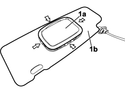
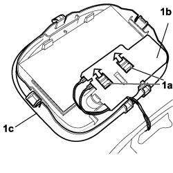
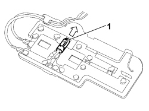

7040E21 COURTESY LIGHT FOR SUN VISOR MIRROR (ONE), LH OR RH - R.R
- Path
- Procedures > 70 FITTINGS > 7040 BODY INTERIOR FITTINGS AND TRIM > 7040E INTERIOR COURTESY LIGHT SYSTEM > 7040E21 COURTESY LIGHT FOR SUN VISOR MIRROR (ONE), LH OR RH - R.R
- Kind
- repair procedure (removal / refitting; the operation number is the code)
- Applies to
- all engines; all production periods
- Interactive page
- https://sloeber94.github.io/elrnDB-fCrm/en/#/194001051
Applies to: all engines; all production periods
 Removing
Removing
 Refitting
RefittingOp. 7065C33 SUN BLIND WITH COURTESY MIRROR AND COURTESY LIGHT ONE LH OR RH R R
1. Carefully release the mirror (1a) from the sun visor (1b) working at the points shown in the diagram.

Applies to: all engines; all production periods
- Fold the mirror over taking care not to spoil the electrical wiring.
1. Using the two hooks (1a), release the bulb holder (1b) from the mirror (1c).

Applies to: all engines; all production periods
1. Remove the bulb in the direction shown by the arrow in the diagram.

Applies to: all engines; all production periods
Refitting
Removing- Fit the bulb in the bulb holder.
- Taking care over the electrical wiring, attach the bulb holder to the mirror.
- Fit the mirror on the sun visor.
Op. 7065C33 SUN BLIND WITH COURTESY MIRROR AND COURTESY LIGHT ONE LH OR RH R R